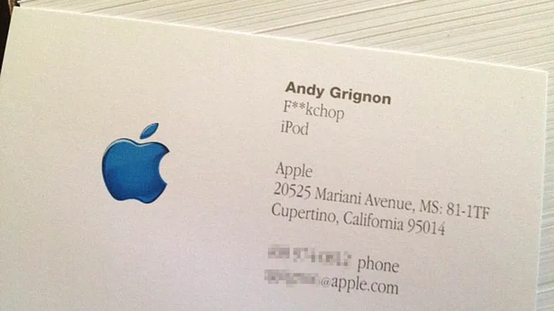

6 智能手机背后的故事(上)
2016-06-28
在录制第一期《Java的前生今世》时，我原本计划将其分为上、中、下三期。然而，在完成两期后，材料准备不充分，只能另辟蹊径，开启了关于任天堂的前生今世的探讨。
所有的坑我计划慢慢填补。之所以改变方向，是因为当时我没有掌握好内容的节奏。第一期Java录了15分钟，第二期则录了20分钟。当准备录制第三期时，我发现要详细讲述Java在安卓手机上的发展可能需要两个小时，于是决定再挖一个新坑，讲述智能手机背后的故事。这些挖下的坑，我都会慢慢填补的。
现在，关于这个故事的大体框架我已经构思好了，只是内容还未完全撰写，我会按照这个框架逐步完成。但这是我高考后首次如此高频率地写作，可能会有些失控，不过所讲的故事都是真实存在的。这些故事大多来源于我浏览的几个网站，如Apple Insider、The Next Web、LinkedIn，以及各版本的乔布斯传记等。
故事的框架如下：首先，我想讲述苹果研发苹果手机的过程；接着，是谷歌如何与苹果结怨；最后，讲述这两个曾经如胶似漆的好朋友是如何反目成仇的。整个故事中，我还会穿插一些其他花絮，如Palm手机、诺基亚手机以及微软的Windows Phone手机。
此外，这个故事不会涉及任何中国厂商。作为一个小程序员，我以写软件为生，不想因得罪粉丝而惹上麻烦。所以，我选择远离是非。我讨厌那种因为喜欢某样东西就与别人争论不休的行为，无论是喜欢手机还是喜欢歌星，都是个人的选择，无需强加于人。
我既不是苹果黑，也不是安卓黑，只是个程序员，这两种手机我都有好几部用于软件测试。在写作时，我尽量避免涉及行业发展趋势，虽然那看起来很有前瞻性。如果有人对行业发展趋势感兴趣，可以去找互联网女皇的预测报告。她每年都会预测很多行业趋势。我最喜欢的作家之一是约翰·戈登，他写的《伟大的博弈》一书讲述了华尔街的历史。我喜欢他的写作方式，既不吹捧也不贬低，只是讲述一个又一个的故事。
我讲的故事来源于多本书籍和网站，如乔布斯的自传和一些八卦网站，如Apple Insider。其中的人物都是真实的，他们的职业生涯我参考了LinkedIn这个网站（该网站最近已被微软收购）。这里的故事可能有些捕风捉影，但我只是把我看到的所有故事片段拼凑成一个完整的故事。并非胡编乱造，与那些纯粹虚构的作品不同。
2007年1月9日，在旧金山的Macworld大会上，乔布斯宣布：“今天我们将推出三款革命性的产品：第一个是宽屏触控式的iPod，第二个是一款革命性的手机，第三款是革命性的互联网通信设备。”随后他又重复了这些话，并补充道：“你们明白了吗？这不是三台独立的设备，而是一台设备——我们称之为iPhone。”台下顿时爆发出雷鸣般的掌声。此时，在观众席的第五排，有几个人脸色凝重，紧张地大口喝酒。他们是iPhone小组的核心成员，只有酒精才能缓解他们此刻的紧张情绪。每当乔布斯演示完一个功能，台下的工程师就喝一杯酒。在压力和紧张中，他们创造了历史。
其中，负责iPhone无线电通信部分的工程师名叫安迪·格里尼翁（Andy Grignon）。无论手机功能多么复杂，打电话都是其核心功能之一。格里尼翁就是负责iPhone的通话和网络连接功能。为了这场发布会，他倾注了大量心血。在开发iPhone的两年里，他的体重增加了50磅。为了能在公司里及时补充酒精、缓解疲劳，他甚至在办公室里放了一个酒柜。说起来，格里尼翁已是苹果公司的老员工了。到2007年iPhone发布前夕，他已为苹果公司工作了15年。早在1993年，他就在苹果公司为一台夭折的项目——牛顿掌上电脑——开发软件和硬件。后来，在2000年，他去了Pixel公司。两年后，他开发的Pixel软件被安装到一台设备上，这台设备就是后来帮助苹果东山再起的iPod。
提到牛顿掌上电脑后，不得不提的是，在1990年代，苹果为了寻找一个低功耗的CPU，找到了英国的一家名叫Acorn的公司，并投资了300万美元。后来，这家公司成为了名满天下的ARM公司。
我仔细研究过科技界短短几十年的历史后发现，很多伟大的发明都出自同一批人之手。他们完成一个项目后就跳槽或创业，然后公司被收购。但无论如何，都是他们推动了科技的进步。
比如开发牛顿手持电脑的人和第一期节目中提到的Java之父高斯林等人之间都有很深的渊源，要么是校友、同事，要么是朋友。后来，在谷歌和苹果的官司中，高斯林还曾出庭作证提及此事。
以足球界为例，皇马和巴萨、AC米兰和国际米兰等俱乐部之间的球迷在中国常常互相谩骂、对立。但实际上，这些俱乐部之间并没有那么深的仇恨。就像巴西的罗纳尔多，他曾在巴萨、国米、皇马和AC米兰等顶级豪门效力过。
在科技界也是如此。比如刚刚提到的格里尼翁，在开发出iPhone第一代后，组里的很多员工就辞职创业了。他们的公司后来被收购，有些人甚至又去做安卓手机了。所以，他们既是iPhone的创造者，也是安卓顶级科技人员。
和顶级的球员一样，数来数去，好东西都是他们发明的。如果不是他们发明的，也是他们朋友发明的。所以我们这些普通的小老百姓实在是没有必要为了争论到底是安卓好还是苹果好，在网上争论好几年。不管是苹果还是安卓，都是他们做的。
乔布斯以火爆的脾气闻名于世，即使是像格里尼翁这样的天才工程师也难免受到他的责骂。格里尼翁曾说，在被乔布斯骂过后，他感觉自己都矮了一截。乔布斯甚至曾骂过格里尼翁“fuck chop”，而格里尼翁却把这个骂人的话印在了自己的名片上。

在开发iPhone之前，苹果公司曾与摩托罗拉公司联合开发过一款名为ROKR的音乐手机。这款手机于2005年9月发布，外观普通、笨重，唯一的亮点是可以使用iTunes管理音乐，但音乐存储量有限，最多只能存100首歌。这款手机的市场反响非常糟糕。《连线》杂志曾有一篇封面故事报道了这次失败，标题是：“这就是未来的手机吗？”苹果公司当然也很不满意，同期发布了苹果第一台iPod nano。当有记者问及摩托罗拉的CEO对iPod nano的看法时，他简洁明了地回答：“去他妈的nano。”
到2004年底，乔布斯终于决定着手研发手机。研发过程中困难重重，据说原型机就制作了六套不同的硬件和软件组合。
担任早期iPhone负责人的法德后来创办了自己的公司Nest，该公司后来被谷歌收购。我从他的一次访谈中了解到了关于六套原型机的传闻。
据我所知，苹果公司至少开发过一台基于Linux版本的手机，但未能满足要求。乔布斯则希望开发一台基于OS X系统的手机，但由于耗电太快且手机CPU无法运行电脑上的操作系统，这一想法未能实现。当时处于非常早期的阶段，根本没有硬件环境供工程师测试。于是工程师们购买了一些硬件发烧友的电路板来进行测试。
项目初期的工程师之一加纳特拉说：“我们从Mac电脑里面的通讯录开始测试，看看能不能让通讯录以每秒钟30到60帧的速度滚动名单。如果速度不够好，那就麻烦了。”幸运的是，他们在电路板上实现了这一目标。
好，这期就先讲到这里吧。下一期我们将继续讲述苹果公司开发iPhone的故事。
最近发生了很多事情，比如前天英国公投退出欧盟，今天梅西又输球了。在国家队11年里，梅西未能获得任何国家队的冠军。我很喜欢足球，也喜欢踢球。梅西宣布退出国家队后，我有些伤心，毕竟梅西、C罗、阿扎尔等都是我非常喜欢的球员。
因为这个视频其实没几个人听，我打算抽空做一期关于足球的节目，留作将来的纪念。同时，也分享一点小知识：英国退出欧盟引起的震动非常大。本期节目提到的ARM公司就是英国的公司，它与苹果有着深厚的渊源。从牛顿手持电脑开始，一直到现在的iPhone里的CPU都是ARM芯片。现在市面上几乎所有的手机里面都是ARM芯片。就是这么一个低调的公司，默默无闻地驱动着我们的生活。
在英国还有一家传奇的公司叫劳斯莱斯。大家非常熟悉的劳斯莱斯是一家顶级豪华轿车制造商，就是网上王思聪常买的那种车。其实劳斯莱斯是两个公司，一个是汽车公司，另一个是飞机发动机公司。
我说这些是想说明英国曾经和现在都是工业强国，将来它可能仍然是工业强国。当我们掏出手机或者坐飞机的时候，尤其是坐空客的时候，希望大家能记住手机和飞机里的“心脏”都是大英帝国制造的。或者像我一样，每当劳斯莱斯或者阿斯顿·马丁出新款车的时候，就换一张电脑桌面。
好，这一期就录到这里，谢谢收听。